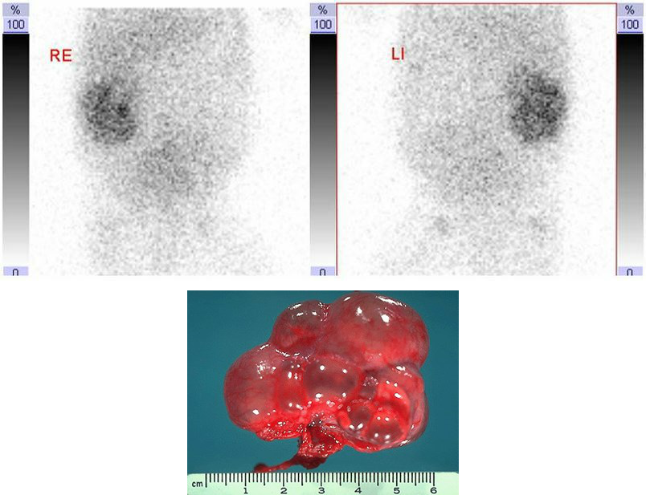

Vraag 1
Er is een nieuw antiviraal middel ontdekt dat interfereert met de productie van vroege viruseiwitten in een aantal verschillende virussen.
Wat is de functie van vroege eiwitten in de replicatie van herpesvirus?
Vraag 2
Welke drie stellingen omtrent vesico-ureterale reflux zijn correct?
Meerdere antwoorden mogelijk.
Vraag 3
Welke twee aangeboren/erfelijke afwijkingen aan de tractus urogenitalis kunnen leiden tot een Pottersequentie?
Meerdere antwoorden mogelijk.
Vraag 4
Tim (12 jaar) heeft taaislijmziekte. Zijn genetische afwijking is een homozygote Delta F 508-deletie.
Voor welke behandeling komt hij in aanmerking?
Vraag 5
Welke oorzaak van grote lengte komt vaak voor?
Vraag 6
Welke twee stellingen m.b.t. deze scan en het daarbij horende pathologisch preparaat zijn correct?

Meerdere antwoorden mogelijk.
Vraag 7
Welke drie beweringen over vesico-ureterale reflux zijn juist?
Meerdere antwoorden mogelijk.
Vraag 8
Welke diagnose past het beste bij deze scan en het bijbehorende pathologisch preparaat?

Vraag 9
Een jongen van 3 jaar heeft een spastisch looppatroon. Hij is te vroeg geboren en er is een vermoeden op een cerebrale parese.
Welk vervolgonderzoek is als eerste aangewezen?
Vraag 10
Er zijn veel verschillen tussen prokaryoten, bacteriën, en protozoa, eencelligen. Waarin komen deze micro-organismen overeen?
Vraag 11
Plasmiden zijn circulaire stukjes DNA waarin bijvoorbeeld genen kunnen zitten die coderen voor resistentie voor een antibioticum. Deze plasmiden zitten in het cytoplasma van een bacterie en kunnen makkelijk van de ene prokaryoot naar de ander gaan.
Hoe heet de manier waarop bacteriën dat doen?
Vraag 12
Een veertienjarige jongen komt met zijn vader op het spreekuur in verband met een uitblijvende puberteit. Vader vertelt dat hij zelf een heel late puberteit heeft doorgemaakt. U verricht lichamelijk onderzoek en constateert dat de jongen nog niet in de puberteit is.
Meest waarschijnlijk is er sprake van:
Vraag 13
Mevrouw Alexandrovic is zwanger van een jongetje. Er blijkt een oligohydramnion te bestaan. Tot de differentiaaldiagnose behoren aangeboren afwijkingen van nieren en urinewegen.
Bij welke drie condities van nieren en urinewegen zou het oligohydramnion kunnen passen?
Meerdere antwoorden mogelijk.
Vraag 14
Welke chromosoomconfiguratie past bij het syndroom van Turner?
Vraag 15
Resistentie van bacteriën voor antibiotica komt steeds meer voor. Vooral in medische centra wordt die makkelijk en vaak van de ene stam op de andere overgedragen. Dit kan direct via plasmiden.
Hoe noemen we het proces waarin de transfer van een plasmide van de ene bacterie naar de andere plaatsvindt?
Vraag 16
Een echtpaar komt bij de fertiliteitsarts wegens ongewenste kinderloosheid. Bij onderzoek hoort de arts bij de man de harttonen aan de rechterkant. De leverdemping zit links.
Naar welk syndroom moet nu als eerste aanvullend onderzoek worden gedaan?
Vraag 17
Welke chromosoomfiguratie past bij het syndroom van Klinefelter?
Vraag 18
Gedrag en andere eigenschappen worden zowel beïnvloed door de genetica (nature) als door de omgeving (nurture). Met behulp van tweelingonderzoek is het mogelijk de invloed van beide te onderscheiden.
Voor hoeveel procent worden volgens tweelingonderzoek verschillen in intelligentie bepaald door genetische aanleg?
Vraag 19
Een jongen van 14 jaar komt bij de arts vanwege uitblijven van de puberteit.
Wat is nu de meest belangrijke vraag aangaande de familiegeschiedenis? Of er mensen in de familie voorkomen met:
Vraag 20
Gedrag en andere eigenschappen worden zowel beïnvloed door de genetica (nature) als door de omgeving (nurture). Met behulp van tweelingonderzoek is het mogelijk de invloed van beide te onderscheiden.
Bij welke psychiatrische aandoening is de invloed van erfelijke factoren op de incidentie ervan het LAAGST?